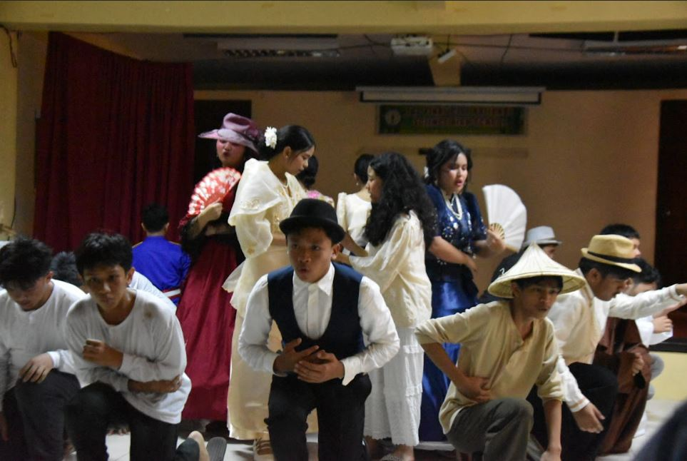
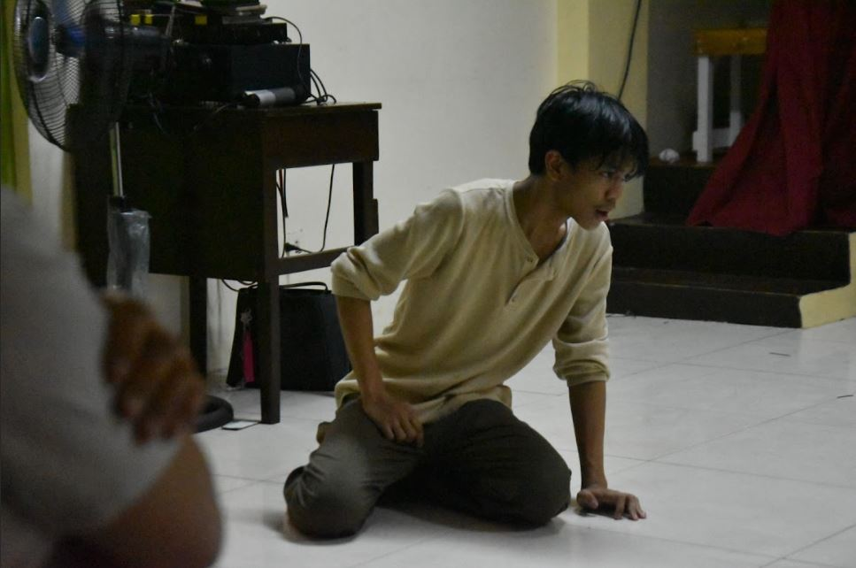

As a new quarter starts, I feel its short duration, major performance tasks, and MAPEH month's pressure reigning on me.
To add to my Grade 9 journey, I decided to join the Street Dance competition for this school year's MAPEH month.
It was not just a "you only live once" fueled decision. I wanted to experience participating in this before Grade 10, where I will most likely partake in the competition again and become more active in other extracurriculars I have not done before in my recent years.
Not everybody knows how important the Miting de Avance is. All are aware that the students running for their respective positions will have the second chance to redeem the student body's trust that they are capable. But not all students have it in their heart the reason or importance of why this event exists. As a student, we should all understance its purpose.
Miting de Avance is an example of what us students will face in the real world where we will have to vote for trustworthy candidates for the government. From the current state of our country, this event is not just something to join on just to pass the time, but a moment to practice choosing the people that will lead us and won't let us down.

Grade 7 and 8, we did not have a prominent theatrical performance task (play), probably because of the lack of time to initiate this. In grade 9, I am so thankful that they decided to make some room for our Noli Me Tangere play.
Playing as Elias was a great experience—acting a prominent role aside from being a side character in the story. I would say that I did a pretty great job in expressing my role. I hope that in grade 10, they will also do a El Filibusterismo play, honing our skills and creating fun memories once more.

Click the Link to watch 9 - Faith's Full Noli me Tangere Performance on Youtube!
All Photos are creditted to Jade Imperial from 9 - Family